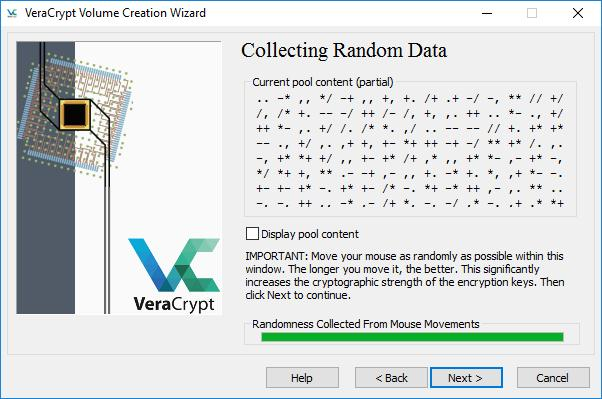
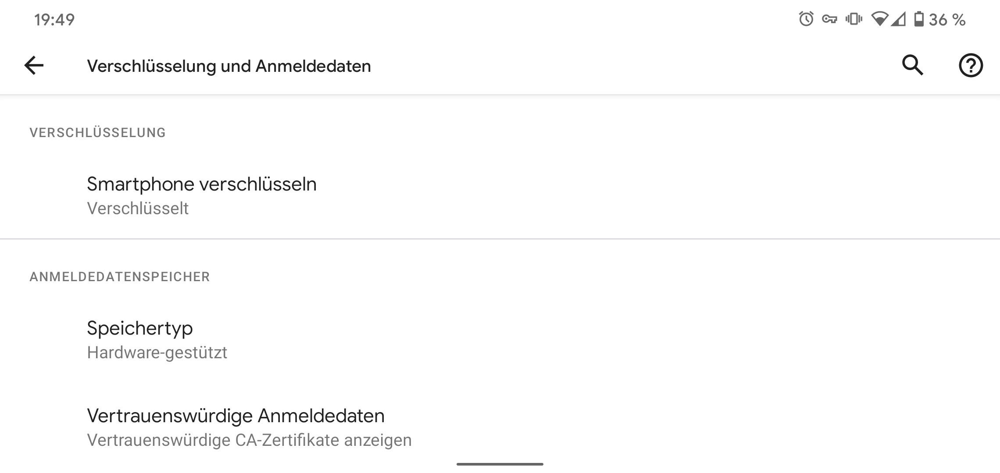
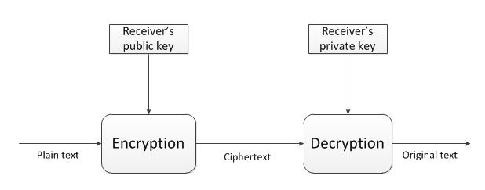

Dateien verschlüsseln
Inhalt
So schützt du also die Daten die du eh nicht mehr haben willst. Aber was ist mit denen die du noch brauchst? Diese solltest du verschlüsseln. Wenn du das richtig machst haben die Behörden kaum eine Chance an die Daten heranzukommen.
Grundsätzliches
Ein Versteck ersetzt keine Verschlüsselung. Irgendwo tief in einem Ordner abgelegte Dateien werden die Be hörden mit hoher Sicherheit finden. Gleiches gilt für in der Wohnung versteckte Datenträger. Effektiv schützen kannst du dich nur indem du deine Daten verschlüsselst. Wenn sie Datenträger mitnehmen ist das egal, da sie dich nicht zwingen können das Passwort herauszugeben. In den gleich folgenden Anleitungen wirst du dir an einigen Stellen ein Passwort ausdenken müssen. Bitte beachte hierfür auch den Abschnitt “Passwort”. Ein gutes Passwort ist für die Sicherheit deiner Daten essentiell. Wenn du Backups von deinen Daten anlegst denk daran auch diese zu verschlüsseln. Bevor du versuchst deine Geräte zu verschlüsseln lege auch eine Sicherung an, falls mal was schiefgeht. Und noch was: Am sichersten sind die Daten die du gar nicht erst speicherst. Halte dich besonders bei heiklen Informationen an das Konzept der Datensparsamkeit. Wenn du unbedingt Papiere aufbewahren musst tue dies in einem Umschlag der mit “Für meinen Anwalt” o.Ä. beschriftet ist.
Computer
Für deinen Computer hast du zwei grundlegende Optionen. Du kannst das gesamte System verschlüsseln, oder einen verschlüsselten Container anlegen in dem du du vertrauliche Dateien ablegst.
Systemverschlüsselung mit VeraCrypt (Win)
- VeraCrypt installieren und starten
- “Create Volume” klicken
- “Encrypt the system partition” anwählen und “Next” klicken
- “Normal” anwählen, “Next”
- “Encrypt the whole drive”
- Single- oder Multiboot auswählen. Wenn du nicht weißt worum es geht wähl einfach ersteres
- Algorithmen auswählen (AES und SHA-256 sind in Ordnung)
- Passwort eingeben (siehe dazu Kapitel „Passwort“)
- Die Maus möglichst zufällig durch das Fenster bewegen bis der grüne Balken voll ist, dann “Next”
- “Next”
- Entsprechend der Anweisungen eine Rescue Disk erstellen. Wenn du kein CD-Laufwerk hast kannst du auch einen USB-Stick verwenden. Mit der CD bzw. dem USB-Stick kannst du das System nicht wiederherstellen wenn du dein Passwort vergessen hast. Sie dienen nur dazu das System zu retten falls Dateien beschädigt wurden die VeraCrypt zum entschlüsseln benötigt. Du solltest den Datenträger also gut aufbewahren, wenn die Cops ihn kriegen sind deine Daten aber trotzdem noch sicher.

VeraCrypt benötigt Zufallsdaten zum verschlüsseln.
- “1-Pass” Wipemode auswählen (Das kennen wir schon vom Löschen)
- “Test” klicken. Der Rechner wird nun neustarten und du kannst dich das erste mal mit deinem Passwort anmelden. Wenn ein “PIM” verlangt wird drücke einfach Enter. Wenn alles funktioniert hat kann es weitergehen.
- VeraCrypt sollte sich automatisch gestartet haben. Auf den Button “Encrypt” klicken
- Notfallanweisungen lesen, ggf. drucken und mit “Ok” bestätigen
- Abwarten bis alles verschlüsselt ist. Bei größeren Windows-Updates wird es Probleme geben wenn die Festplatte komplett verschlüsselt ist. Das Update schlägt dann fehl und muss zurückgerollt werden. Wenn du Pech hast kann dadurch sogar deine verschlüsselte Partition beschädigt werden oder der Rechner kann nicht mehr starten. Seit Version 1.23 von VeraCrypt gibt es eine Technik mit der du trotzdem ein solches Update durchführen kannst. Versuche auf keinen Fall größere Updates ohne diese Maßnahmen einzuspielen.
Windows Upgrade eines verschlüsselten Systems
- Erstelle ein Installationsmedium mit dem Media Creation Tool von Microsoft
- Öffne eine Kommandozeile (Einfach im Startmenü “cmd” eingeben und mit Rechtsklick als Administrator:in ausführen)
- Navigiere in das Verzeichnis mit der setup.exe das du in Schritt 1 erstellt hast
- Führe den Befehl
.\setup.exe /ReflectDrivers “C:\Program Files\VeraCrypt” /PostOOBE C:\ProgramData\VeraCrypt\SetupComplete.cmdaus. (Alles in einer Zeile) - Folge den Anweisungen auf dem Bildschirm
Sollte dir das wirklich viel viel zu kompliziert sein kannst du auch schauen ob deine Windows Version “Bitlocker” mit dabei hat. Das ist das Verschlüsselungs-Programm von Microsoft. Es ist einfacher zu bedienen, allerdings ist es sehr wahrscheinlich das dort Hintertüren eingebaut wurden. Allgemein kann VeraCrypt da deutlich mehr Vertrauen entgegen gebracht werden, aber bevor du stattdessen gar keine Verschlüsselung benutzt verwende lieber Bitlocker. Das war die Systemverschlüsselung. Alternativ kannst du auch einen Container erstellen und deine Daten darin ablegen anstatt das ganze System zu verschlüsseln. Dann musst du natürlich darauf achten keinerlei kritische Daten außerhalb des Containers zu belassen, was nicht immer ganz einfach ist.
Container mit VeraCrypt (Win, Linux)
- VeraCrypt installieren und starten
- “Create Volume” klicken
- “Create an encrypted file container” anwählen und “Next” klicken
- “Standard VeraCrypt volume”
- Einen Speicherort und Dateinamen für deinen Container auswählen, den Haken bei “Never save history” belassen
- Algorithmen auswählen (AES und SHA-256 sind in Ordnung)
- Größe des Containers festlegen
- Passwort eingeben (siehe dazu Kapitel „Passwort“)
- Ein Dateisystem auswählen (FAT ist in Ordnung) und die Maus möglichst zufällig durch das Fenster bewegen bis der grüne Balken voll ist, dann “Format”
- Abwarten bis die Erstellung abgeschlossen ist und mit “Exit” das Programm verlassen
Container mit VeraCrypt öffnen
- VeraCrypt starten
- Freien Laufwerksbuchstaben auswählen
- “Select File” und die Containerdatei auswählen
- “Mount”
- Passwort eingeben und “Ok” klicken
Wie erwähnt bringen viele Linux-Betriebssysteme bereits Verschlüsselungsmechanismen mit. Zwischen den Verschiedenen Linux-Distributionen gibt es einige Unterschiede. Meistens ist es am einfachsten die Verschlüsselung direkt bei der Installation zu aktivieren. Beispielhaft stehen hier die Schritte für Ubuntu, unter “Mehr zum Thema” findest du aber auch Anleitungen für andere Distributionen und Möglichkeiten auch ohne Neuinstallation ein verschlüsseltes System zu bekommen.
Systemverschlüsselung bei der Installation (Ubuntu)
- Installationsprozess starten
- Im Fenster “Art der Installation” einen Haken bei “Encrypt the new Ubuntu installation for security” setzen und weiter zum nächsten Schritt
- Passwort eingeben (siehe dazu Kapitel „Passwort“)
- Haken bei “Overwrite empty disk space” setzen
- Mit “Install Now” die eigentliche Installation starten Bedenke das diese Verfahren umgangen werden können indem in deine Wohnung eingedrungen wird und ein Keylogger installiert wird. Das ist ein kleines Gerät am USB Anschluss oder eine Software welche die Tastatureingaben mitschneidet. Statte also dein UEFI und ggf. deinen Bootloader mit einem Passwort aus und prüfe immer mal wieder den Anschluss deiner Tastatur auf Unregelmäßigkeiten.
Links:
- VeraCrypt
- Anleitung VeraCrypt-Systemverschlüsselung
- Windows Upgrade bei Systemverschlüsselung
- Anleitung Linux Verschlüsseln
- Anleitung BIOS Passwort
Smartphone
Die meisten Smartphones kommen heutzutage ‘ab Werk’ mit verschlüsseltem Speicher. Ob die Speicherverschlüsslung wirklich akiv ist, solltest du zur Sicherheit trotzdem einmal überprüfen. Das geht auf jedem Gerät ein wenig anders. Meist wirst du in den Einstellungen unter ‘Sicherheit’ fündig, den genauen Weg für dein Gerät recherchierst du am besten selber. Sollte die Verschlüsselung nicht aktiviert sein, solltest Du das sofort nachholen. Du lädst deinen Smartphone auf und wählst die Option zum Verschlüsseln, gibst zweimal deine gewünschtes Passwort/PIN ein. Wie Du ein möglichsts sicheres wählst, kannst du im Kapitel Passwörter nachlesen. Nun wartest bis der Prozess abgeschlossen ist. Teilweise muss nochmal explizit angewählt werden das auch die externe Speicherkarte verschlüsselt werden soll. Grundsätzlich ist das alles auch genau so sicher wie auf dem Computer, aber besonders ältere Geräte, die nicht mehr mit Updates versorgt werden stellen ein zusätzliches Risiko dar. Trotz Verschlüsselung ist es also vernünftig zu Aktionen nur ein billiges Zweit-Handy mitzunehmen, auf dem keine persönlichen Daten gespeichert sind. Auch eine SIM-Karte, die nicht mit deinem Namen verknüpft ist, ist dabei eine gute Idee.

Kommunikation
Wenn du eine Nachricht über das Internet versendest wird sie viele Stellen durchlaufen bis sie am Ziel angekommen ist. Vielen davon musst du ohne Verschlüsselung einfach vertrauen das sie deine Daten schützen und sich im Zweifel auch gegen Behördenanfragen zur Wehr setzen. Das machen aber leider viele nicht. Zum Beispiel ist bekannt das 1&1 zu denen auch GMX und Web.de gehören ohne große Rückfragen gespeicherte Daten weitergeben. Aber auch bei kleineren Anbietern solltest du dich nicht darauf verlassen dass die Betreiber:innen für dich in den Knast gehen werden wenn sie eine Anfrage bekommen. Die Lösung ist auch hier wieder Verschlüsselung.
Asymmetrische Verschlüsselung
Was wir gerade für die Verschlüsselung unserer Geräte verwendet haben war eine traditionelle symmetrische Verschlüsselung. Das bedeutet das die Person an die Daten kommt die das Passwort hat. Für Kommunikation ist das etwas unpraktisch, da so das Passwort zwischen allen Kommunikationsteilnehmer:innen auf einem sicheren Kanal ausgetauscht werden muss bevor kommuniziert werden kann. Das ist umständlich und bringt das Risiko mit sich, dass das Passwort beim Austausch abgefangen wird. Dieses Problem wird mit asymmetrischer Verschlüsselung gelöst. Bei dieser haben unsere Kommunikationsteilnehmer:innen Alice und Bob je einen öffentlichen und einen privaten Schlüssel. Der öffentliche Schlüssel wird nur zum verschlüsseln verwendet, der private Schlüssel wird nur zum entschlüsseln verwendet.
Alice und Bob?
Alice und Bob sind die “Anna und Arthur” der Kryptografie, In unserem Beispiel wollen die beiden miteinander kommunizieren ohne dass Mallory mitlesen kann.
Ein privater und ein öffentlicher Schlüssel bilden ein Schlüsselpaar. Eine Nachricht die mit Bobs öffentlichem Schlüssel verschlüsselt wurde kann nur mit seinem privatem Schlüssel entschlüssselt werden. Selbst Alice die die Nachricht verschlüsselt hat kann die Verschlüsselung nicht rückgängig machen, denn nur Bob kennt den privaten Schlüssel.

Dieses Verfahren wird fast überall verwendet wo ohne einen sicheren Kanal zum Passwortaustausch kommuniziert werden muss. Es ist auf den ersten Blick etwas kompliziert, funktioniert aber gut.
| « Dateien löschen | ⇑ Themen | Mail-Verschlüsselung » |